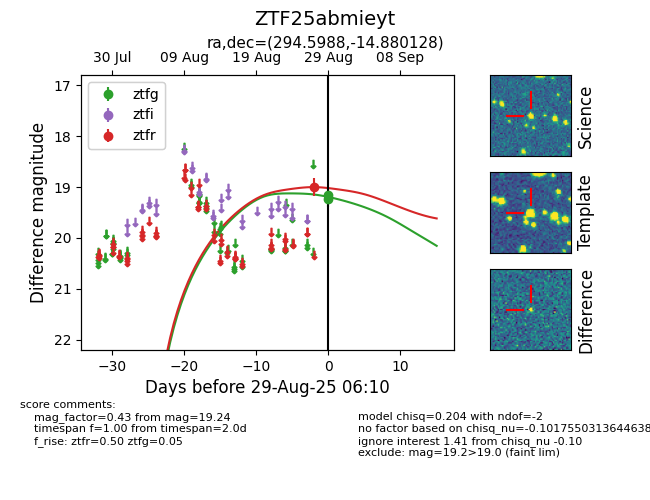

FINK: ZTF25abmieyt
Lasair: ZTF25abmieyt
ALeRCE: ZTF25abmieyt
ZTF25abmieyt (ztf,fink)
equatorial (ra, dec) = (294.5988,-14.88013)
galactic (l, b) = (24.5821,-16.98372)

last atlaso=19.62, ztfg=19.41, ztfr=18.50
2 atlaso, 5 ztfg, 6 ztfr detections